A photographic essay — May 2026
Mauthausen · Gusen · Austria · 81 Years
The concentration camps did not appear fully formed. They were not the first act. A panel inside the Mauthausen Memorial museum, drawn from the Dokumentationsarchiv des österreichischen Widerstandes, summarizes the progression with clinical precision. With the National Socialists' seizure of power, persecution became government policy. The Volksgemeinschaft (the “People's Community”) defined belonging by racial and ideological purity, and designated everyone outside that definition as an enemy to be eliminated: Jews foremost, but also Romani, homosexuals, Jehovah's Witnesses, political dissidents, priests, the disabled, and anyone deemed "asocial" by the state. The Nuremberg Laws of 1935 codified who counted as a Jew. People were banned from professions, robbed of property, stripped of all civil rights. By 1938, with the Kristallnacht, synagogues were burned and over 25,000 people deported to camps. The museum is explicit: this is a sequence. Each step made the next one easier. Each law made the next law thinkable. The list grew. The camps grew with it.
Before the camps came the rhetoric — speeches naming enemies within the nation, describing certain people as infestation and contamination, promising national greatness through racial purification. That rhetoric found ordinary people in ordinary towns, people who lived in villages like the one below the hill at Mauthausen, where a church spire rises above green fields and children played soccer near the Danube. The horror was built, piece by piece, in plain sight, by a movement that had learned to make dehumanization feel like patriotism.
The patterns that produced Mauthausen are not unique to 1930s Germany. History may not repeat exactly, but it rhymes in ways that should stop us cold and question current paths. In November 2023, on Veterans Day of all days, Donald Trump told an American rally crowd he would “root out the communists, Marxists, fascists and the radical left thugs that live like vermin within the confines of our country.”1 Earlier that year, he warned that immigrants were “poisoning the blood of our country.”2 These were not offhand remarks. In Mein Kampf, Volume II, Chapter IV, Adolf Hitler wrote: “All great cultures of the past perished only because the originally creative race died out from blood poisoning.”3 Elsewhere he described Jews as having “poisoned the blood of others” (p. 272) and called for a state dedicated to “the care of its best racial elements” in “this age of racial poisoning” (p. 628). The structural parallel is exact: identify a group as a biological contamination of the national body; promise to purify it; give the crowd permission to stop thinking of those people as fully human.
The point is not that America is Nazi Germany. The point is that this is how it starts. Not with gas chambers but with speeches. Not with camps but with the slow normalization of calling human beings vermin and poison and enemies within. By the time the camps exist, the permission for them has already been granted, word by word, rally by rally, for years. Columbia University historian Timothy Naftali put it directly after Trump’s “vermin” speech: “When you dehumanize an opponent, you strip them of their constitutional rights to participate securely in a democracy — because you’re saying they’re not human.”4
In May 2026, I traveled to Austria to attend the 81st liberation commemoration ceremonies at both the Gusen subcamp (May 9) and the main Mauthausen camp (May 10), representing my family and the memory of my grandfather, Dr. (Captain) Jack Blackstone, who served as a medical officer with the 26th Infantry (Yankee) Division attached to Patton’s Third Army. He had fought his way across France and into Germany and Austria. He had survived the Battle of the Bulge. When asked, all he would say was that, “the Ardennes was fucking cold.” He was among the first American doctors to reach Gusen and Mauthausen upon liberation in May 1945, and he was awarded the Bronze Star with two Oak Leaf Clusters for his service there. He was offered a promotion to Major if he would reenlist, but he had seen enough. Of Gusen / Mauthausen, he would only tell me that they could smell the camp well before they ever saw it. He would never speak about what he actually saw.
At the U.S. memorial ceremony on May 10, Col. Jonathan Drake, Defense Attaché at the U.S. Embassy Vienna, spoke about the men who liberated these camps. “The Soldiers of these divisions were battle-hardened,” he said. “They had been through an incredible amount of things. They had seen all sorts of untold hardship. Nothing they saw prepared them for what they would see here. They thought the worst of the war was behind them, but the scenes of cruelty, starvation and systematic torture and death would horrify them and stay with them the rest of their lives.”5 Col. Drake wears a mountain tab, airborne pin, and jump wings on his uniform. He is not a man given to easy reverence. My grandfather never described what he saw. Neither, apparently, did most of the men who were there with him.
What follows is a documentary record of what those places look like today, eighty-one years later, and what it meant to stand there.
1 Trump, Veterans Day rally, Claremont, NH, Nov. 11, 2023. Reported by the Washington Post, ABC News, and others; repeated verbatim in a Truth Social post the same day.
2 Trump, rally in Durham, NH, Dec. 16, 2023 (“They’re poisoning the blood of our country”); repeated and doubled down upon in Waterloo, IA, Dec. 19, 2023 (NBC News, CBS News). Trump first used the phrase in a September 2023 interview with The National Pulse.
3 Hitler, Mein Kampf, Vol. II, Ch. IV (Houghton Mifflin annotated ed., 1943; multiple translations consistent on this passage). The ProQuest peer-reviewed journal Prime Scholars cites the page as p. 260 in the standard English translation. The “blood poisoning” and “racial poisoning” themes recur at pp. 272, 283, and 628.
4 Naftali, quoted in the Washington Post, Nov. 12, 2023.
5 Col. Drake speech at the 81st Mauthausen Commemoration, US Army Europe and Africa, “7ATC Represents WWII Liberators in Mauthausen,” May 12, 2026.
The Language · Then and Now
Adolf Hitler — Mein Kampf, Vol. II, Ch. IV (1925); p. 272
“All great cultures of the past perished only because the originally creative race died out from blood poisoning.” … “He [the Jew] poisons the blood of others, but preserves his own.”
Donald Trump — Durham, NH, Dec. 16, 2023 (NBC News)
“They’re poisoning the blood of our country. That’s what they’ve done. They’ve poisoned mental institutions and prisons all over the world … They’re coming into our country from Africa, from Asia — all over the world.”
Adolf Hitler — Mein Kampf, Vol. II (1925); p. 628
“A state which in this age of racial poisoning dedicates itself to the care of its best racial elements must some day become Lord of the earth.”
Donald Trump — Veterans Day rally, Claremont, NH, Nov. 11, 2023 (Washington Post); Truth Social post same day
“We will root out the communists, Marxists, fascists and the radical left thugs that live like vermin within the confines of our country … The threat from outside forces is far less sinister, dangerous and grave than the threat from within.”
Multiple historians of Nazi Germany identified these parallels immediately and publicly. The words are not identical. The dehumanizing logic — naming a group as contamination, as infestation, as an internal enemy to be purged — is.
Twenty images across five movements — the land, the place, the memory, the family, and the promise.
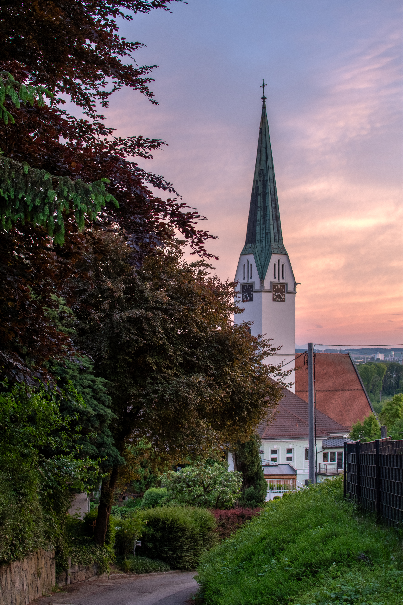
01Mauthausen Village · May 8, 2026
The parish church of St. Nicholas in Mauthausen at golden hour, the evening before the Gusen liberation ceremony. This is a small working town on the Danube near Linz, Austria — mostly farms, the river, and a church. The concentration camp sits in the hills above it. The people here knew. This “ordinariness” is the first fact to reckon with.
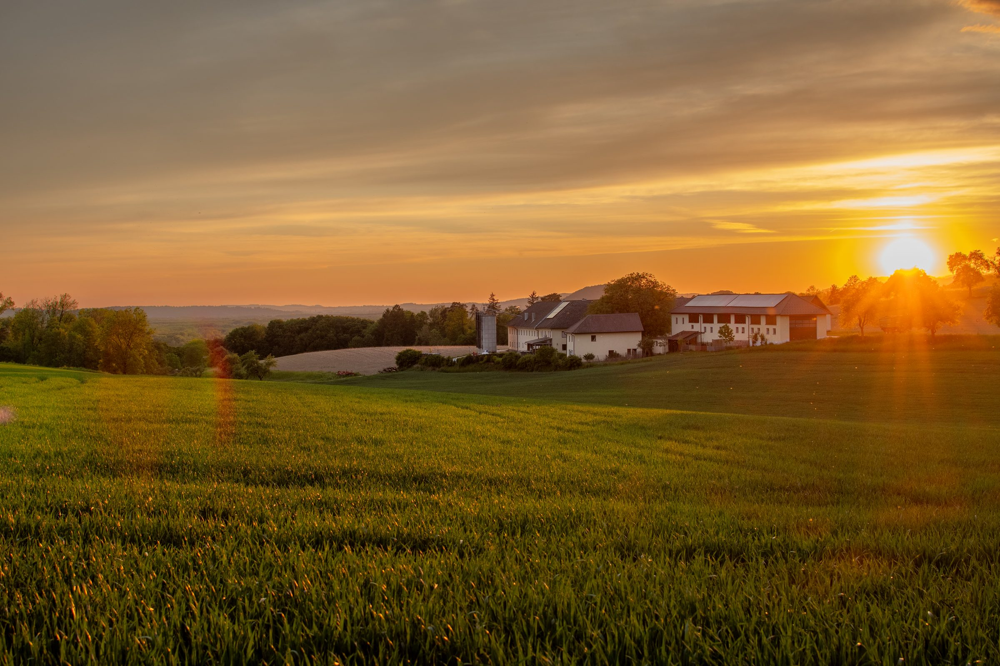
02The Fields Above Town · May 8, 2026
Golden hour over the rolling hills above Mauthausen village. These are the same fields where I believe my grandfather stood for a photograph on V-E Day, May 8, 1945. The land looks almost the same. The trees have grown. The rolling field is still there. A large cemetery lies just behind where I stood to make this image. The war is very close here, against the beauty, stillness and quiet.
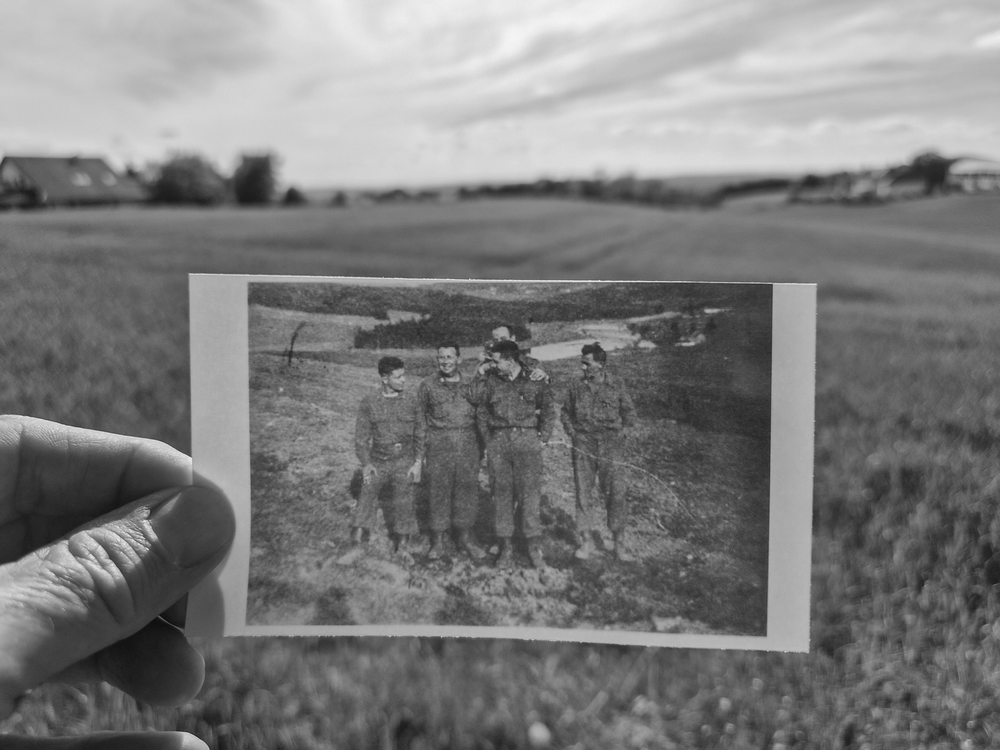
0381 Years Apart · May 8, 2026
My grandfather’s V-E Day photograph held up in front of what I believe is the same location, eight decades later. He would have been 28 years old. The fields are still green. The war is still there if you know where to look. He was a battle-harded medical officer who survived the Battle of the Bulge. Yet he would never speak of what he actually saw at Gusen and Mauthausen.
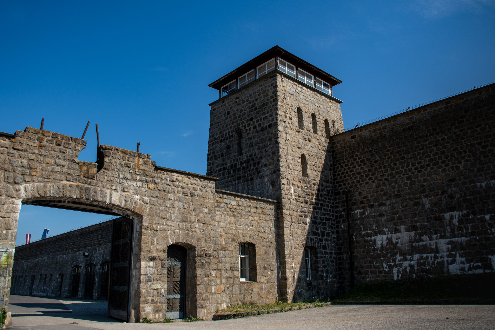
04Mauthausen · May 9, 2026
The main entrance and guard tower of Mauthausen in the morning light. Look at the top of the gate: the rebar protruding from the stonework is all that remains of the Reichsadler — the Nazi imperial eagle that once presided over every prisoner who passed beneath it. On the day of liberation, survivors tore it down with their hands. Photographs from that moment, held in the National Archives and the U.S. Holocaust Memorial Museum photo archives, show them doing it eagerly. The stone was quarried by those same prisoners. The camp was designed to be permanent. The eagle is gone. The stone walls and towers remain.
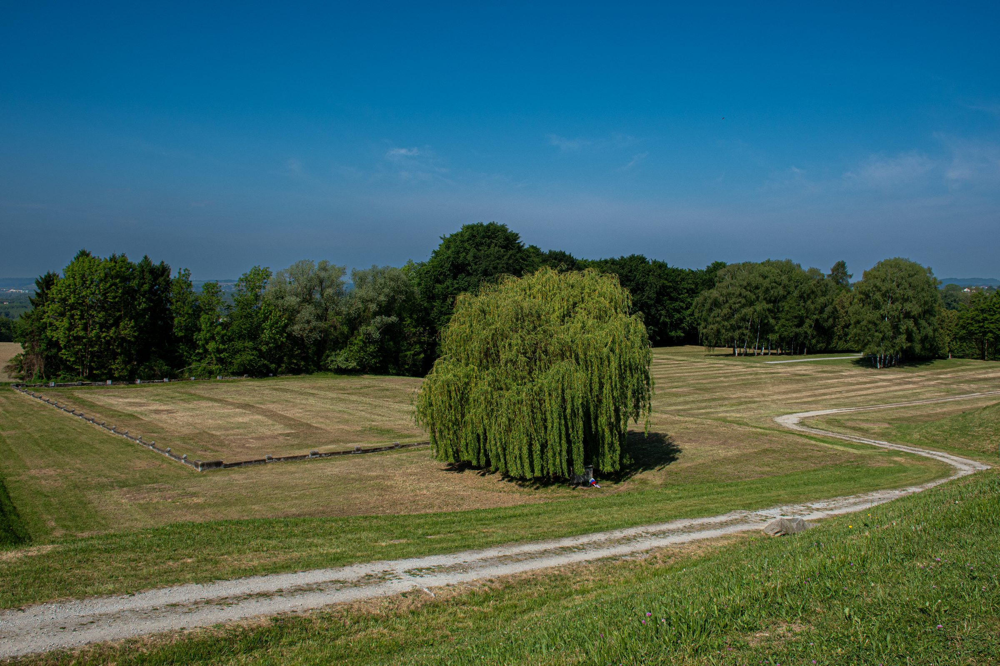
05Mauthausen · May 9, 2026
Just outside the main gate. The SS had a soccer team. Local Austrian clubs played against them in a regional league. The terraced hillside to the left served as bleachers for the spectators, including children. To the right of the willow were wooden overflow barracks for prisoners, separated from the playing area by barbed wire. Anyone on the field and anyone in the stands could see them. Everyone knew. Yet the games continued.
When the liberation forces arrived, they found the crematorium still holding unburned remains and bodies piled beyond identification. For those they could not identify, this soccer pitch became a mass grave. American forces required the remaining SS guards and local villagers to dig the graves. The same ground where Austrian civilians had watched a league match now held the evidence of what their silence had made possible. The bodies have since been moved as part of ongoing efforts to identify the dead.
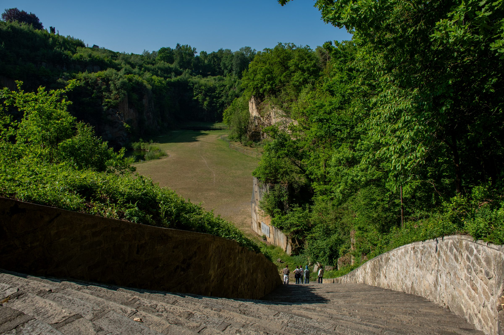
06The Quarry · May 9, 2026
One hundred and eighty-six steps. One of the primary execution methods at Mauthausen. Prisoners were forced to carry granite blocks weighing up to 50 kilograms up these stairs, often at a run and under constant blows from guards. Those who faltered could trigger a domino collapse of bodies and stone all the way down. For the executions, prisoners would be made to this time and again until they expired.
For others, prisoners would be lined up at the cliff edge above — the Fallschirmspringerwand, or “Parachutists’ Wall” as the SS called it — and given a choice: be shot, or push the prisoner in front of you over. Many chose to jump themselves. Former prisoner Edward Mosberg stated: “If you stopped for a moment, the SS either shot you or pushed you off the cliff to your death.” The SS also threw children over the wall.
In winter, guards would strip prisoners and spray them with water, leaving them to freeze. Mauthausen was not classified as a death camp in the formal sense — it was something the Nazis called a Knochenmühle (Bone Grinder). In other camps, prisoners dreaded a transfer here. Its name incited terror across the entire system.
Wiener Graben Quarry · May 9, 2026
The floor of the granite quarry today is peaceful. Flowers bloom, a still green pond reflects the greenery on the cliff walls. Trees have grown along the edges. The beauty is disorienting. It takes effort to wrap your head around both things at once: what this place looks like now and what it was designed to do. Over 90,000 people died in the Mauthausen-Gusen complex over seven years.
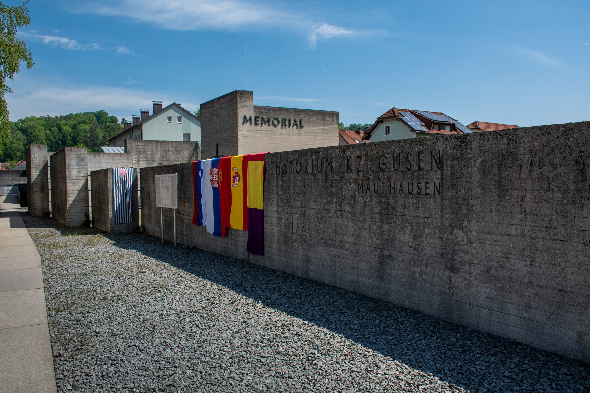
08Gusen · May 9, 2026
The memorial wall leading into the former Gusen branch camp and crematorium. For decades after the war, barracks were converted to aparatments and houses were built over the site. An estate home sits on top of what was once one of the most lethal subcamps in the Nazi system. Only the crematorium building was preserved — and even that was nearly lost. Today it is a memorial. The neighborhood around it is quiet and residential. The local quarry is still in use.
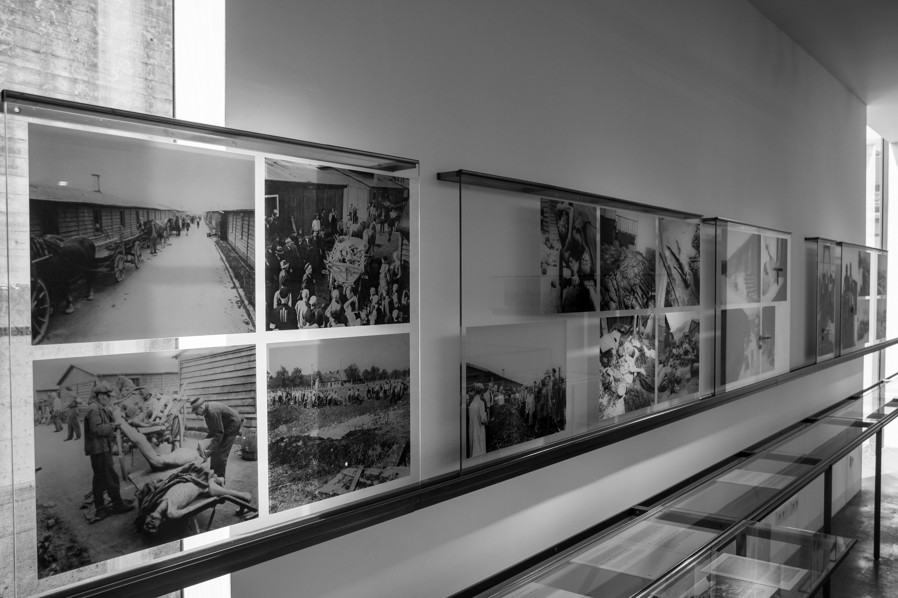
09Inside the Gusen Memorial · May 9, 2026
Photographs inside the Gusen memorial museum, showing the camp as American soldiers found it in May 1945. The images are from the liberators themselves. U.S. troops liberated nearly 40,000 people across the Mauthausen-Gusen complex in the days following May 5, 1945 — many of them too far gone to survive even with care. My grandfather was the first American doctor to reach the site. He never described what he saw.
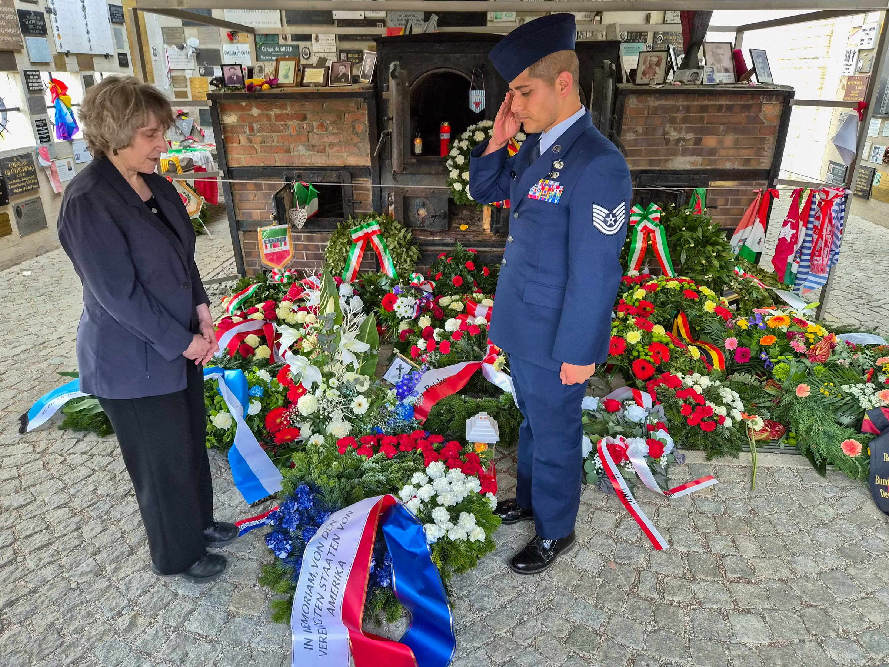
10Gusen Ceremony · May 9, 2026 · 5:00 PM
The United States wreath being laid inside the Gusen crematorium by Tech Sgt. Julio Rosa and U.S. Special Envoy for Holocaust Issues Ellen Germain. Around 1,000 people attended the ceremony held on the former roll call square (Appellplatz) before a joint procession to the Gusen Memorial for the wreath laying at the crematorium. The ceremony has been held annually, kept alive for decades by survivor groups and families before any government got involved.
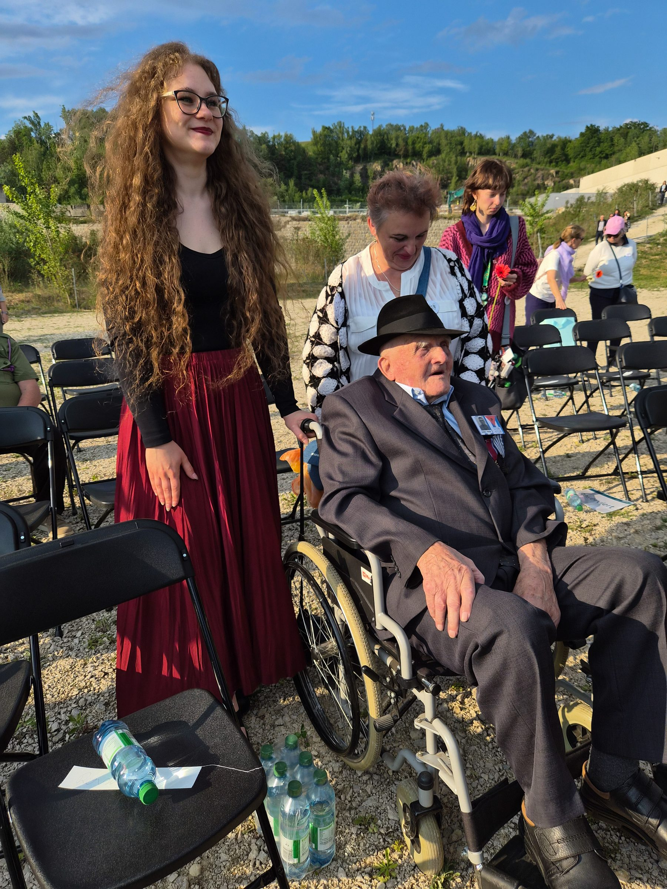
11The Last Survivor · May 9, 2026
Stanisław Zalewski — the last known surviving prisoner of the Gusen camp — attended with his family. He was a young man when he was imprisoned here. He is in a wheelchair now. There may be no living survivors at the 82nd ceremony. The chain from eyewitness to living memory is about to break. After that, it is only photographs and stone and the people who choose to show up.
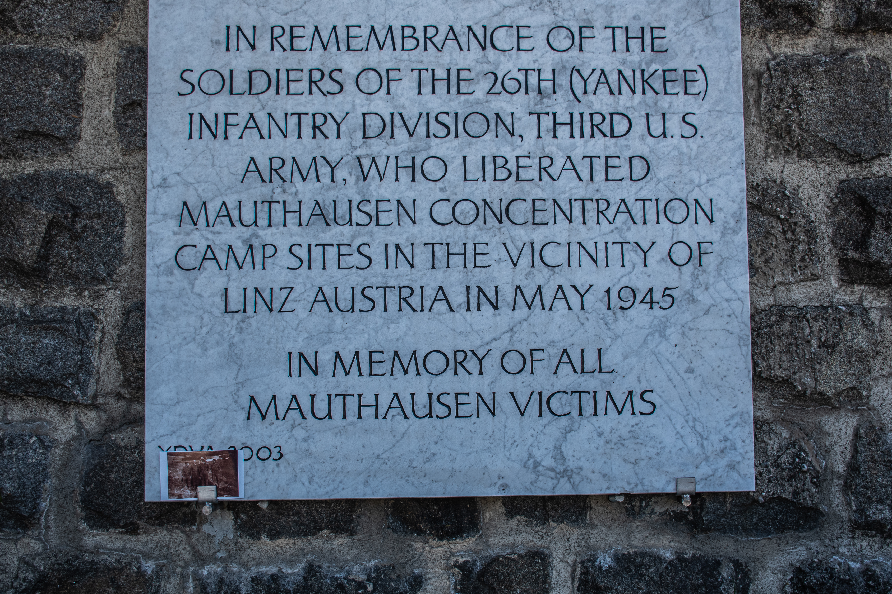
12Mauthausen · The 26th Infantry Memorial
The U.S. liberator memorial at Mauthausen, with the inscription for the 26th Infantry Division (Yankee Division), Third U.S. Army — my grandfather’s unit. I placed his V-E Day photograph at the base of the plaque. Captain Jack C. Blackstone, M.D. was 27 years old when he arrived here. He went on to deliver thousands of babies as an OB/GYN in Owensboro, Kentucky, for the next 40 years. He died in 2005 having never described what he found at Mauthausen to anyone in his family.
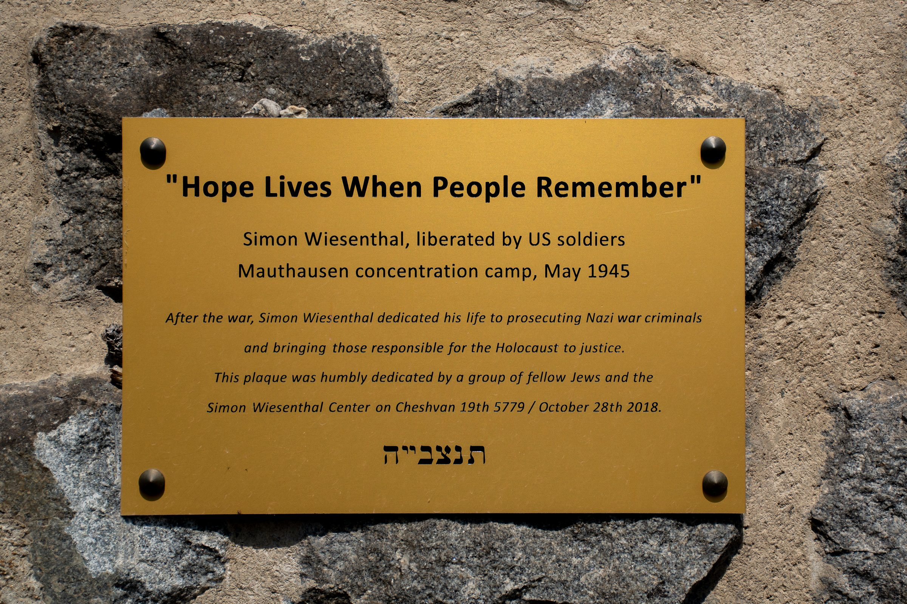
13Mauthausen · Inside the Camp
A commemorative plaque inside Mauthausen. The phrase asks more of the living than it first appears to. It is not a comfort but rather an obligation. Memory is not passive. It requires showing up and speaking up.
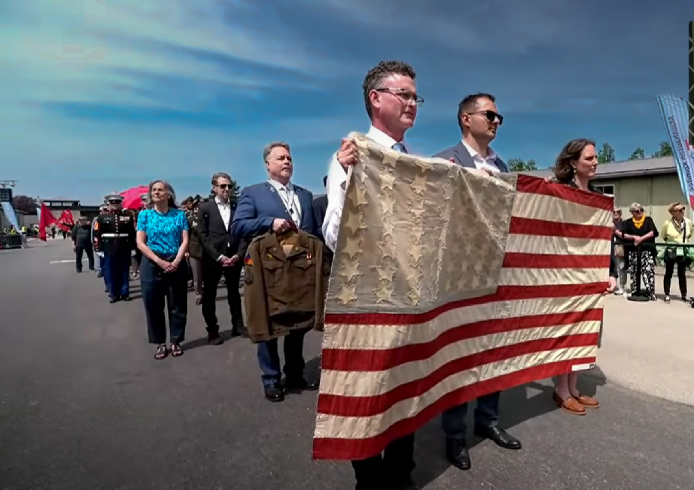
14Mauthausen · May 10, 2026
In the final days before liberation, a group of Mauthausen prisoners secretly sewed an American flag. They had no model to work from and didn’t know exactly how many stars it should have — so they sewed 56. In this replica, I carried that flag as part of the U.S. delegation procession through the main gate on liberation day. The original flag is preserved at the Mauthausen Memorial. The prisoners made it because they believed someone was coming. Someone was.
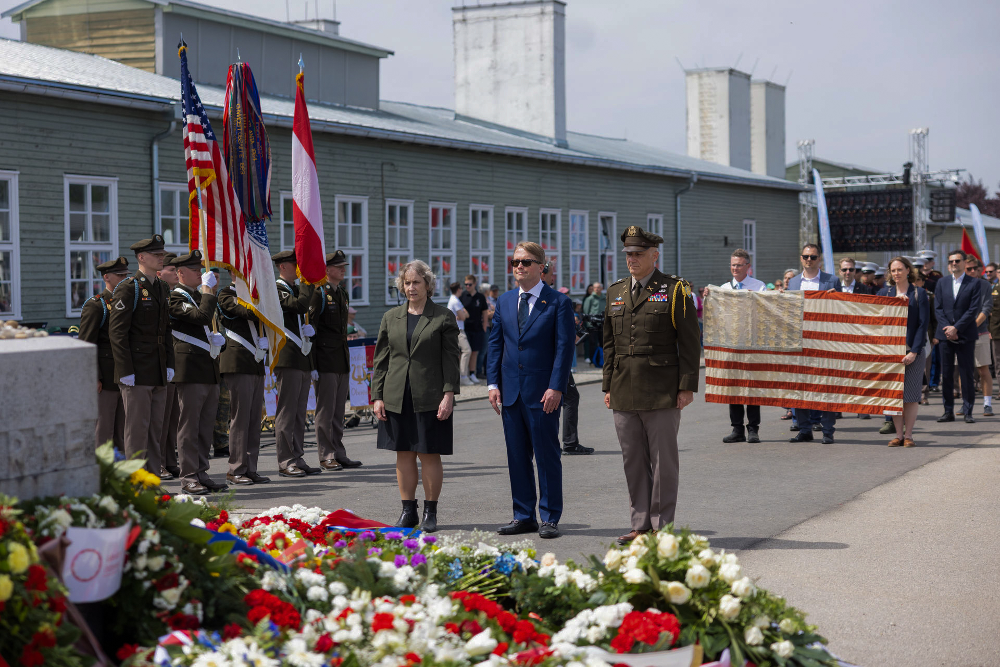
15Mauthausen Liberation Ceremony · May 10, 2026 · 81st Anniversary
The U.S. delegation wreath laying at Mauthausen. Left to right: Col. Jonathan Drake (Defense Attaché, U.S. Embassy Vienna), U.S. Ambassador Arthur Fisher, and U.S. Special Envoy for Holocaust Issues Ellen Germain. I am visible in the background, carrying the prisoners’ flag. Ambassador Fisher later told the crowd: “It’s sometimes at the darkest point in life — and at night — that we see the light. It’s important that as a society we remember that light, so that darkness can never return.”
📸: Spc. Thomas Dixon, 7th Army Training Command>
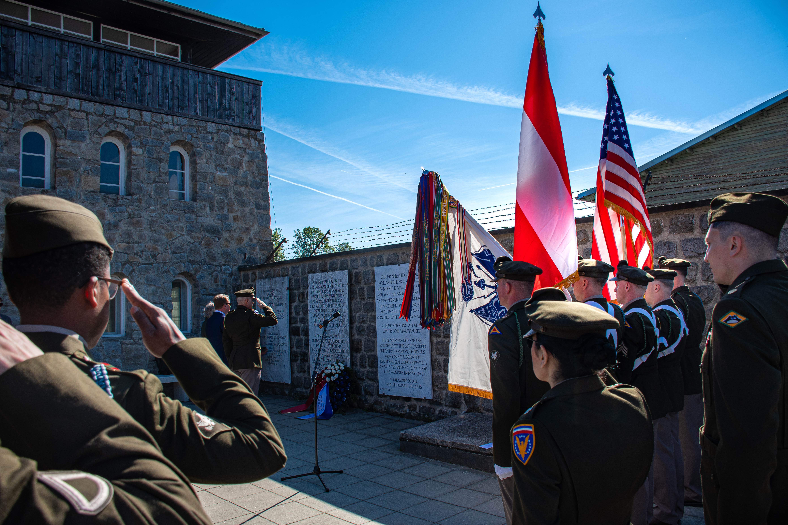
16U.S. Army · May 10, 2026
Soldiers from the 7th Army Training Command’s Joint Multinational Readiness Center saluting at the U.S. memorial. For the third consecutive year, active-duty American soldiers attended as color and honor guards. The wreath ribbon read: “In Remembrance of the Liberators of the Oppressed.” In the words of Ms. Germain (Special Envoy for Holocaust Issues), “The horrors of Mauthausen remind us of the need for vigilance in combating antisemitism and protecting fundamental freedoms — because when we don’t, unthinkable terror ensues.”
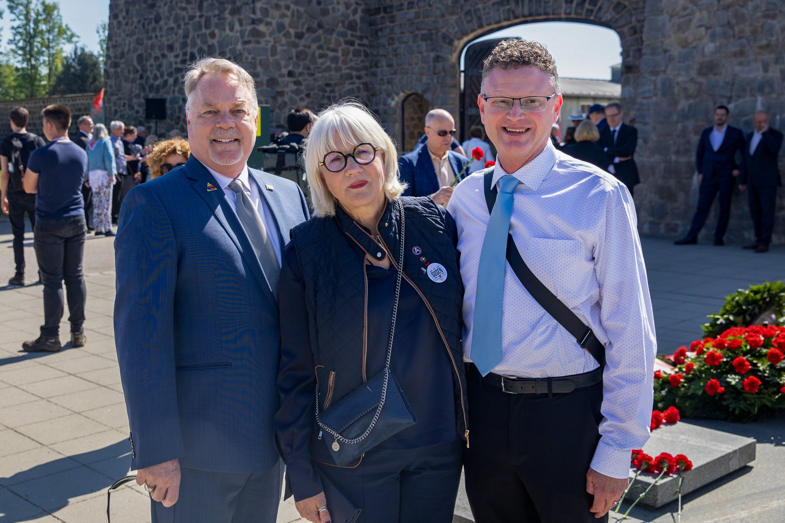
17Mauthausen · May 10, 2026
With Helen Patton, granddaughter of General George S. Patton, and Robert Esterley III (left), whose father was also a liberator. My grandfather’s 26th Infantry Division served under Patton’s Third Army. Helen walks in her grandfather’s name at these ceremonies. This photograph carries a particular weight as one of the very few things my grandfather would talk about was the fact he served with Gen. Patton — something he was particularly proud of for the rest of his life.
📸: Spc. Thomas Dixon, 7th Army Training Command>
Mauthausen · International Liberation & Commemoration Ceremony · May 10, 2026
The international procession forming at the main roll call grounds at Mauthausen. Delegations from dozens of nations and demographic groups carrying their flags and banners. Each delegation represents a country or demographic group whose people were imprisoned or killed here. The ceremony has grown rather than diminished in the years since the last survivors died. People keep showing up. That is the only answer there is.
📸: Mauthausen Memorial>
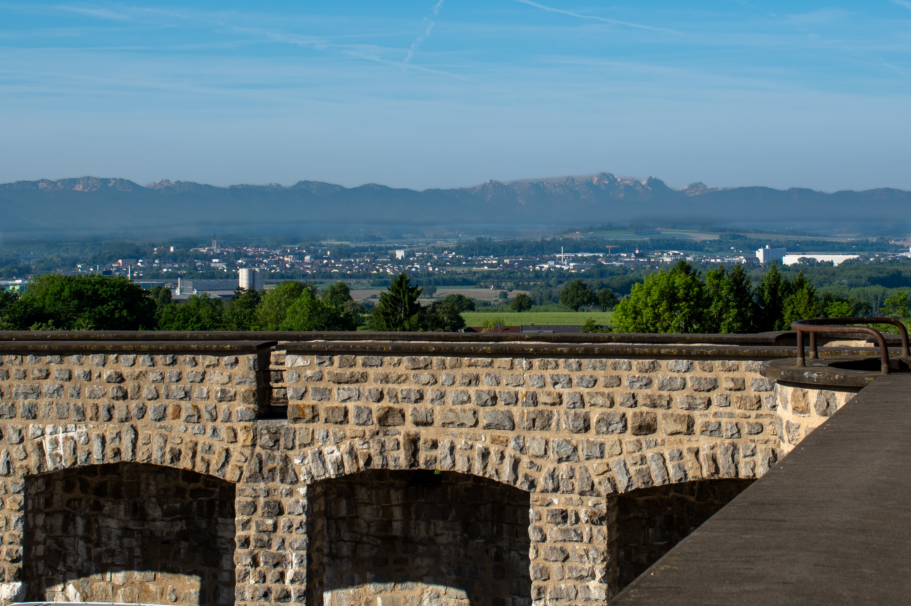
19Mauthausen · Inside the Walls
The Austrian Alps visible from inside the Mauthausen camp walls. This view existed for every prisoner who stood here. The mountains are indifferent and beautiful. The SS knew it too as officers held weddings at Mauthausen, posing for photographs with these same Alps in the background and celebrating life and love on the same hill where prisoners could see the mountains and nothing else. Beauty and atrocity occupied the same ground, at the same time, without apparent contradiction. That is perhaps the hardest thing to hold onto about this place. Such incredible beauty, yet such incredible horror.
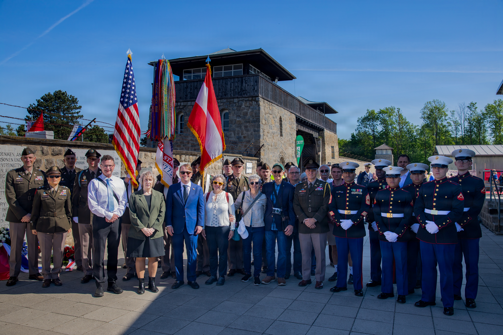
20The U.S. Delegation · May 10, 2026
The United States delegation at the 81st Liberation Ceremony. Ambassador Arthur Fisher, Special Envoy Ellen Germain, Col. Jonathan Drake, soldiers from the 7th Army JMRC, the Embassy Marine Guard, family members and descendents of liberators and survivors who came to stand in for those who can no longer attend. My grandfather helped liberate this place and provide medical care to those whom he could save. I carried his memory here. Hopefully future generations of affected familes will continue to do so as well. It's the only way we can consistently remember so that we never let this happen again.
📸: Mauthausen Memorial>
Never Again
My grandfather never talked about Gusen or Mauthausen. Not to anyone as far as I know. He came home from the war, finished his residency, delivered thousands of babies over the following decades, and, with the exception of a few small details, took what he saw at these camps in May 1945 entirely to his grave. I didn’t know what he had witnessed until I was an adult. I didn’t fully understand what it meant until I stood there. I didn't fully understand what it meant to the survivors until I walked with our US delegation at the commemoration ceremonies.
I made this trip partly because the 81st anniversary of the liberation was likely to be the first ceremony held without any living liberators present. The last survivors of the camps are also nearly gone. Stanisław Zalewski, the final known surviving prisoner of the Gusen branch camp, attended the May 9 ceremony in a wheelchair. There may be no one like him at the 82nd. When that happens, the descendents alone will have to carry these memories. What remains is stone and photographs and the people who choose to show up so that we Never Forget. I wanted to be among them and was fortunate beyond words for this opportunity.
I carried a replica of the flag sewn by prisoners in the final days before liberation. They didn’t know exactly how many stars to put on it. They sewed 56. The flag means many things, but one of them is this: the prisoners believed someone was coming. They were right. We have to contiually believe that there will be people coming to oppose fascism, the denegration of fellow humans, and genocidal evel. To be wrong about that is a cost to heavy to bear.
Auschwitz and Dachau receive the bulk of public attention — Auschwitz for the industrial scale of its killing, Dachau as the first camp and the one American journalists most famously documented. But Mauthausen and Gusen occupied a distinct category of horror. The National WWII Museum describes Mauthausen’s reputation spreading through the entire camp system: “In other camps, inmates began to dread a transfer to Mauthausen, after returning prisoners described the huge quarries as hell on earth.” Its German nickname was the Knochenmühle — the Bone Grinder. Prisoners who survived the Stairs of Death but outlived their usefullness in the quarry were placed in rows at the cliff edge and, at gunpoint, given the choice of being shot or pushing the prisoner in front of them over the wall. Guards “delighted,” as the National WWII Museum records it, in hurling prisoners off the top of this wall. In the winter, guards stripped prisoners and sprayed them with water, leaving them to freeze. The medical block was staffed by prisoner doctors given no medication. Dr. Aribert Heim — the camp’s lead physician — performed operations without anesthesia for sport and kept skulls as trophies. The cruelty at Gusen, the largest subcamp, was considered by survivors to exceed even Mauthausen itself.
This level of systematic sadism does not appear spontaneously. It is cultivated. It requires years of prior dehumanization to reach the point where an ordinary man will spray a prisoner with water and watch him freeze, and go home for dinner afterward. The museum panels document that sequence: legal exclusion, then property seizure, then civil death, then deportation, then the camps. Each stage desensitized the perpetrators — and the bystanders — to the next.
This may be the most uncomfortable question Mauthausen raises, and the museum does not shy away from it. The Mauthausen Komitee Österreich states plainly: the subcamps, as well as the main camp itself, were supplied with groceries and building materials by local businesses. Guards were often recruited locally. Prisoners arrived by train and were then marched through the centers of towns and villages. As the Komitee notes: “They were not easily overlooked.”
The Mauthausen museum displays, alongside its records of atrocity, newspaper clippings about the SS soccer team — which played in a regional Austrian league against local civilian clubs. A marriage certificate of an SS guard to a local girl is on display nearby. At the end of the war, hundreds of Soviet prisoners escaped. Only 11 survived. Local citizens participated in hunting down and returning the rest, in what the Nazis called the Hasenjagd — the Hare Hunt. The Holocaust Centre North, after visiting the museum, wrote: “Here, it could be argued, that the locals were not only bystanders but collaborators in the murder of thousands at Mauthausen.”
These are not easy questions. Most of the people who supplied food to the camp, who watched the prisoners march through town, who played soccer in a league with the SS, were not personally operating the gas chambers or pushing anyone off a cliff. But they normalized what they saw. They decided, each day, that it was not their problem. Historian Gordon Horwitz, in In the Shadow of Death: Living Outside the Gates of Mauthausen, documents how this accommodation worked and what it cost the communities that made it. The question he poses — and the museum poses, implicitly, to every visitor — is not only “how did the perpetrators do this?” but “how did their neighbors let them?”
That question is not safely tucked away in history. It is the question that has to be asked wherever dehumanizing rhetoric normalizes itself into policy. At what point does looking away become complicity? Will you look away as people with disabilities are mocked? Will you look away as immigrants are demonized? Will you look away as people of color are specifically targeted by law enforcement? Will you look away as the people who come to the rescue of the oppressed are arrested, beaten, and killed by government agents? The people of Mauthausen did not build the camp. But they fed it, staffed it, played soccer with it, and helped hunt down those who escaped it. What will you do?.
I have tried in this essay to be precise about the parallel between the language that built Mauthausen and some of the political language of our own moment. I do not think precision requires false balance. The citations are in the text. When Trump said immigrants were “poisoning the blood of our country” (Durham, NH, December 2023) and that his opponents were “vermin within the confines of our country” (Veterans Day rally, November 2023), multiple historians of the Nazi period noted immediately that this was the same rhetorical logic Hitler used — not a metaphorical similarity, but the same dehumanizing structure: identify a group as a biological contamination, name them as an enemy within, promise to purge them, make the audience comfortable with imagining their removal. The goal is always the same: to make a group of people feel less than human so that violence against them becomes thinkable.
The historians did not say this is Nazi Germany. They said: we know what this sounds like. We have studied where it leads. We are saying so now, while there is still time to hear it. Mauthausen did not begin with Mauthausen. It began with speeches. This is not a partisan observation but a historical one grounded in documented evidence. The people who stood in those crowds in the 1930s were not all monsters. Most of them were ordinary people who had been given permission, little by little, to stop thinking of certain other people as fully human. That permission was granted by the silence of good citizens and in the language of a controlling political party. It can be revoked by the people too, but only if enough are paying attention.
I am still new to photography and actively learning. These images range from deliberate compositions made with a Nikon D7500 to phone photos grabbed in the moment during a ceremony where I was also a participant, not just a photographer. Some of the most important images in this essay — Stanisław Zalewski, the wreath layings, the delegation moments — were made on a phone in difficult light with no second chance. I include them because the record matters more than the craft.I also extend my thanks to Spc. Thomas Dixon of the 7th Army Training Command, who was there to document the events with his photography posted to dvidshub.net.
Thank you to the Mauthausen Memorial and the Gusen Memorial Committee for organizing ceremonies that have grown more powerful as the survivors have aged and passed. Thank you to Ambassador Arthur Fisher, Special Envoy Ellen Germain, and Col. Jonathan Drake for a U.S. delegation that showed up with both solemnity and commitment. Thank you to Helen Patton for her continued presence at these commemorations. And to Stanisław Zalewski, who came one more time: the world owes you a debt it cannot repay, but we can keep showing up.